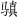

三国志发微（二） 修订本
《魏志·方技传》考论
目次
一、东方第一名医之死
二、华佗享年及遇害年月日最下限
三、曹丕之不公又见于《杜夔传》
四、曹彪年龄见于《朱建平传》
五、赵翼“回护说”不切事实
六、《管辂传》中之何毌丘王
“方技传”的名目，在正史中首见于《三国志》。后来沿用这一名称的，有隋·李百药的《北齊書》、后晋·刘昫的《旧唐书》、宋·宋祁《新唐书》、元·托克托等所修《金史》等等。，跟“方技传”名异而实同的，有南朝宋·范晔的《后汉书·方术传》，北齐·魏收的《魏书·术艺传》，唐·魏征等所编的《晋书·艺术传》，等等。
陈寿笔下的“方技”名流，指精通医方和养生术及擅长相术、占卜术、音乐艺术等顶尖级专家。这里的“方技”一词，大大拓宽了西汉时代的概念，它包含了西汉的“方技”和“术数”的内容。
据《汉书·艺文志》所记的刘歆《七略》可知，汉成帝、汉哀帝时，图书被分为六大类，即“六艺”、“诸子”、“诗赋”、“兵书”、“术数”及“方技”；《术数略》的文献包括天文、历谱、五行、蓍龟、杂占、形法之书，《方技略》的图书拥有医经、经方、房中、神仙四种。由此可见，“方技”一词在西汉时代的《史记》、《汉书》里只指医药及养生之类的技术，所以司马迁在《史记》中把名医扁鹊、仓公单列为《扁鹊仓公列传》，而将占卜的理论家司马季主单列为《日者列传》，又因“三王不同龟，四夷各异卜”而另撰《龟策列传》。
到了东汉，“方技”的词义范围逐渐扩大，故而《三国志·魏书·方技传》的传主，不仅涵盖了西汉时代被视为“方技者流”和“术数者流”这两类名家，还包括精通乐理、善制乐器的专家，其中华佗是神医，杜夔知音律，朱建平擅长相术，周宣精于占梦、管辂妙于术筮。
研读《魏志·方技传》，不能忘记《蜀志》和《吴志》中的同类传记。《三国志》的三志，既是鼎立为三的独立单位，又是若即若离互相关联的“三国世界”的整体；在蜀、吴二志里，跟《魏志·方技传》对应的，有《蜀志·周群传》和《吴志·吴范刘惇赵达传》等；如果我们把同类的传文连成一片，眼中才可能出现一幅比较完整的三国方技群英图。
研读《魏志·方技传》，当然更必须先了解其撰写宗旨。陈寿在卷末中说，这是《史记·扁鹊仓公列传》、《日者列传》的续篇：
评曰：华佗之医诊，杜夔之声乐，朱建平之相术，周宣之相梦，管輅之术筮，诚皆玄妙之殊巧，非常之绝技矣。昔史迁著《扁鹊仓公》、《日者》之传，所以广异闻而表奇事也，故存录云尔。
在这里，所谓“广异闻而表奇事”，只不过表面文章。读过《史记》的人都知道，司马迁在《日者列传》序言里说：“自古受命而王，王者之兴，何尝不以卜筮决于天命哉！其于周尤甚，及秦可见。代王之入，任于卜者。太卜之起，由汉兴而有。”这是从历史的视角说明“日者”（以占候卜筮为业的人）之言跟政治大事的密切关系。至于传文就更妙了。传世本《日者列传》的传主是司马季主，但全传只记录了司马季主对“二大夫”的答辞，这篇答辞一面宣扬“日者”傲视权贵的人格：“见人不正，虽贵不敬也；见人有汙，虽尊不下也。”一面描写不良社会现象并痛骂当时特权阶层所谓的“贤者”：“今公所谓贤者，皆可为羞矣。卑疵而前，孅趋而言；相引以势，相导以利；比周宾正，以求尊誉，以受公奉；事私利，枉主法，猎农民；以官为威，以法为机，求利逆暴；譬无异于操白刃劫人者也。初试官时，倍力为巧诈，饰虚功执空文以誷主上，用居上为右；试官不让贤，陈功，见伪增实，以无为有，以少为多，以求便势尊位；食饮驱驰，从姬歌儿，不顾于亲，犯法害民，虚公家。此夫为盗不操矛弧者也，攻而不用弦刃者也，欺父母未有罪而弑君未伐者也。”
《三国志》跟《史记》一样，有许多弦外之音。这就是说，陈寿在《魏志·方技传》中，并非单纯地再现传主的精湛技艺，不光是为了反映当时的科技文化的水平；更重要的是，《方技传》作为全书的一部分，为前面《纪》、《传》中的一些人物评议及历史事件提供了“互文见义”的内容，为立体化、多侧面描绘“三国时代”重要角色及政治大事再添一笔。
一、东方第一名医之死
公元200年前后之世界名医，西半球首推古罗马之盖伦（Galen，129-199年），东方则有汉末之华佗。
盖伦身历安敦尼王朝（96-192）、塞维鲁王朝（193-235），得终天年，享年71岁，所撰之书得以流布，可谓厚幸矣。华佗何辜？既流浪于桓、灵世（146-189），又见召于曹阿瞒，死于“考竟”而“活人书”失传，其生不逢辰，命矣夫！
元人刘壎（1240-1319）《隐居通议》“华佗”条有论曰：“观《魏志·华佗传》，见其医入神妙，与造化通，仓、扁后才仅見耳；然佗能洞見世人之五脏，而不能密察孟德之心术，竟被收录坐死，豈其明智有所偏欤？”此谓华佗之死，由于“不能密察孟德之心术”，窃以为适得其反。
谚云“性格即命运”，华佗之死，死于性格。范晔《后汉书·方术·华佗传》较陈寿《魏志》多出“为人性恶，难得意”七字，其文虽不雅驯，于解读历史悲剧不无助益。
范《书》之“性恶”者，今谓执著之个性、独立之人格也。桓、灵之世，阉宦与外戚恶斗，党锢之祸惨烈，当是时，华佗本为士人，兼通数经，然而“沛相陈珪举孝廉，太尉黄琬辟，皆不就”，其个性之倔、人格之高，风韵之清，于是著矣。尝试论之，曹阿瞒之生父曹嵩，宦官曹腾之养子也，花钱买官，官至太尉，家赀巨亿，以此为荣，则其为人也，可谓有因时牟利之才；由此观之，阿瞒之机警，阿瞒之明略，有自来也。而华佗则不屑出仕于贪腐之王朝，行医民间，病虫悬于家壁，以此自娱；由此观之，范《书》之“难得意”者，盖指华佗满怀愤世嫉伪之情，时时情见乎面、情形诸言、情付之行也。华佗之性格如此，若遇阿瞒于微时，无忧也；时入“建安十年”左右，阿瞒大权在握，玩汉帝刘协于股掌之中，树个人权威于生杀之柄，而华佗不屑之情彰显无遗，岂能逃脱权奸毒手？
陈《志》谓华佗之死，根源在于“本为士人，以医见业，意常自悔”，文义含蓄。卢弼《三国志集解》引清人韩慕庐曰：“元化胸中似有所不可于操者。”窃以为慕庐之说是也，惜未深论；今沿《公羊》之法，就“悔”字推而论之。“悔”者何？不满现状也。现状如何？以行医闻名而为阿瞒所“召”，不得不“常在左右”也。常在阿瞒左右，必为当时身份最高、待遇最佳之侍医，有何不满？此只可意会、不可言传者也。元化不满而难以言表，如何作计？借口归取“家书方（家中所藏记载秘方之书）”而一去不返也。一去不返而阿瞒“大怒”，遂按“法”而“考竟”之，“考竟”谓何？华佗之同时人刘熙曰：“狱死曰‘考竟’，考得其情，竟其命于狱也。”华佗临死，不乞求于权奸，但“出一卷书，与狱吏曰‘此可以活人’”，陈《志》胡为记此？明华佗临死犹心存“人”字而不忘“活人”之事也。华佗既死于阿瞒之“法”，陈《志》又何以特记阿瞒“吾悔殺华佗”之叹？明阿瞒之“法”可宽可严，或“矫情任算，不念旧恶”，或凶相毕现，残酷杀伐，随其意耳。或曰：陈寿谓阿瞒乃“非常之人，超世之杰”，是阿瞒非神、非兽，则其“悔殺华佗”者，盖良心发现乎？曰：非也，此语所流露者，极端自私自利之心耳；盖以为华佗若在，其“爱子仓舒”不至于病死也。明乎此，则知华佗之死，警世之义非一。
二、华佗享年及遇害年月日最下限
张舜徽主编《三国志辞典》（山东教育出版社1992年4月第1版）以叙录人物生卒年为常例，然而第333页“华佗”条虽然近二百言，于华佗卒年则只字未提。今汇录旧说，略作考订。
（1）若依《后汉书·方术传》，则华佗遇害之前，已“年且百岁”。
范晔《后汉书·方术·华佗传》曰：“华佗字元化，沛国谯人也，一名旉。游学徐土，兼通数经。晓养性之术，年且百岁而犹有壮容，时人以为仙。”
（2）若依《中外历史年表》说，则华佗遇害之年，在汉建安十三年（208）以前数年。生年不详。
《中外历史年表》（翦伯赞主编，中华书局1961年2月第1版）第160页“208年，戊子，汉建安十三年”栏，末尾曰：“曹操杀名医华佗当在此前数年”。中华书局2008年4月出版之《中外历史年表》（校订本）127页内容同上。
（3）若依《中国历史人物生卒年表》说，则华佗享年六十三（141？-203）。
《中国历史人物生卒年表》（吴海林、李延沛编，黑龙江人民出版社1981年3月第1版）第33页“华佗”栏，定“生年”为“约公元141，约汉永和6年辛巳”，“卒年”为“公元141，203，汉建安8年癸未”。
（4）若依《〈三国志校诂》外编》说，则华佗遇害之年，不迟于建安十三年（208），当时华佗年近花甲。
《〈三国志校诂》外编》（吴金华著，见《古文献丛稿》，江苏教育出版社1995年11月第版）第226页《时人以为年且百岁而貌有壮容》条曰：“华佗卒年不详。佗曾受陈珪、黄琬辟举，年岁当小于二人，而珪、琬至建安前期不过六七十岁；又据本志《武文世王公传》可知，曹冲死于佗后，则佗之遇害必在建安十三年以前；翦伯赞所编《中外历史不表》汉建安十三年（208）拦下云：“曹操杀名医华佗，当在此前数年。”其说甚是。据此推算，佗年似在六十上下。《全晋文》卷一百六十七载邓处中《华氏〈中藏经〉序》云：“先生未六旬，果为魏所戮。”邓《序》之真伪虽不能确定，但作为唐宋以前文献仍有参考价值，《序》谓华佗年不满六十，似合于史实。范晔《后汉书》及《册府元龟》作“世人以为仙”，多一“仙”字，则下文“年且百岁”便成史家纪实之文；周寿昌以为范书不可从，极有见地。”
（5）若依《三国演义大辞典》说，则华佗遇害之年，在汉建安十三年（208）。生年不详。
《三国演义大辞典》（沈伯俊、谭良啸编著，中华书局2007年7月第1版）第169页“华佗”栏，标注为“华佗（？-208）”。
小结旧说：今回顾以上五说，窃以为《后汉书》不可取，《中国历史人物生卒年表》无根据，理由具见旧作《〈三国志校诂》外编》（1995）。据（2）、（4）、（5）说，则华佗享年不满六十，卒年之上限为建安十三年（208）以前数年，下限为建安十三年（208）。
今日补说一：华佗治病救人，名满天下，年近花甲，犹为阿瞒所害，足见奸雄之惨无人道。旧著所引晋人邓处中《华氏〈中藏经〉序》云“先生未六旬，果为魏所戮”，窃以为近实。按《三国志》之例，除少数特殊人物如曹丕（死时40岁）、曹睿（死时35岁）、诸葛亮（54岁辞世）等等，终年在五旬以上、六旬以下者，多不著其年岁，盖当时“人五十不称夭”（刘备语）、花甲以上人渐少也。
今日补说二：窃以为华佗遇害之年，定于“建安十三年”前期，或许更为合理。旁证见于《太平御览》卷七四0《疾病部·盲》引沈约《晋书》：
司马景王婴孩时，有目疾，宣王令华佗治之，出眼瞳，割其疾而内之以药。
司马宣王即司马懿，景王即司马师（208－255年），司马师生年为建安十三年。倘若“出眼瞳”故事并非虚构，则华佗于建安十三年之前期尚在人世。此华佗有德于司马氏之事，有无虽属可疑，吾则宁可信其有。按魏史，曹丕代汉后七年而死，曹睿继位后十三年而死，曹芳继位十年后政归司马氏，是曹氏拥有魏帝国之极权，首尾不足三十年，此后司马氏于曹家死党大肆杀戮、严加管制，手段更胜于曹操。华佗地下有知，当热烈鼓掌、欣然而笑矣。
其二，华佗遇害之月日，下限必当在“建安十三年五月甲戌（十九日）”之前，即公元208年6月20日以前。参考资料如下：
（1）《魏志·方技·华佗传》：及后爱子仓舒病困，太祖叹曰：“吾悔杀华佗，令此儿强死也。”
（2）《魏志·武文世王公·邓哀王沖传》：邓哀王沖，字仓舒……太祖数对群臣称述，有欲传后意。年十三，建安十三年疾病，太祖亲为请命。及亡，哀甚。
（3）《艺文类聚》卷四五所引曹丕《仓舒诔》曰：建安十二年五月甲戌，童子曹仓舒卒。乃作诔曰：矧尔既天，十三而卒。何辜于天，景命不遂。
按仓舒之死，传世本《魏志》皆作“建安十三年”，如今尚无别本异文可供质疑，故目前姑以此为正。
《类聚》所以引《仓舒诔》作“十二年”，值得重视，可惜文献不足，只能存异待考；《古文苑》之《仓舒诔》则作“十五年”，其中“五”字，疑当作“三”或“二”，盖传写之讹。
三、曹丕之不公又见于《杜夔传》
历史人物之业绩，多载于本纪、本传，糗事丑闻则互见于其他纪、传，此史家之常例。
例如，俗称“刘表无大志”，此小说家言，不见于《魏志·刘表传》。汉代有谶语曰，代汉者“当涂高”；当汉末大乱之际，凡有政治资本而能拥兵割据一方者，谁无此心？袁术以为名“术”字“公路”，皆合
“当涂”之义，又以为“三公之子”，与“高”义合，故敢为天下先，首先称帝于淮南。刘表字景升，“升”者登高也，又“当涂”于荆州，当袁、曹相争之际，“拥十万之众，安坐而观望”，安知其“无大志”乎？陈寿以“董二袁刘”合传者，此皆有“大志”而不能成事者也。刘表城府甚深，其微妙心态偶露于《杜夔传》：“荆州牧刘表令与孟曜为汉主合雅乐，乐备，表欲庭观之。”欲盛陈天子之乐于荆州牧之庭，岂胸无大志者所敢想？《后汉书·孔融传》曰“是时荆州牧刘表不供职贡，多行僣伪”，《杜夔传》所谓“欲庭观之”即“僣伪”之例。
又如，老瞒之负面，《华佗传》中已提供案例；阿丕之不公，亦见于《杜夔传》。
《魏志·文帝纪》评曰：“若加之旷大之度，励以公平之诚，迈志存道，克广德心，则古之贤主，何远之有哉！”陈寿此评，明谓曹丕之为人也，志道不高，气度狭小，待人无公平之诚，行事往往如老瞒之缺德，然而，本纪中每每不录其丑，其丑多见于诸传，何以故？此用《春秋》之笔、《史》、《汉》之法也。
曹丕鄙陋冷酷之一面，在《魏志》中已见重将名臣之《曹洪传》、《鲍勋传》、《杨俊传》等，此《杜夔传》亦特著其例：
黄初中，为太乐令、协律都尉。汉铸钟工柴玉，巧有意思，形器之中多所造作，亦为时贵人见知。夔令玉铸铜钟，其声韵清浊多不如法，数毁改作。玉甚厌恶之，谓夔清浊任意，颇拒捍夔。夔、玉更相白于太祖，太祖取所铸钟，杂错更试，然知夔为精而玉之妄也，于是罪玉及诸子，皆为养马士。
文帝爱待玉，又尝令夔与左等于宾客之中吹笙鼓琴，夔有难色，由是帝意不悦。后因他事系夔，使等就学，夔自谓所习者雅，仕宦有本，意犹不满，遂黜免以卒。
经过曹操验证，柴玉实为虚妄小人无耻之尤，然曹丕“爱待”之；事实表明，杜夔性直艺高守正自爱，而曹丕“不悦”，乃至“因他事”系之、“黜免”之。曹丕个人品质如何，不难想见。
四、曹彪年龄见于《朱建平传》
乱世宜立“长君”，其理见于《春秋左氏传》。曹爽集团覆灭以后，王凌心存魏室，欲立“长而才”之曹彪为魏帝，事泄，司马懿以朝廷名义迫使曹彪自杀。此为“三马同食一槽”
（语见《晋书·宣帝纪》）之第二波，《魏志·武文世王公·楚王彪传》与《王凌传》皆有记述，然曹彪之年龄不曾述及，故“长而才”之“长”犹待点明。及至展阅《朱建平传》，方知陈寿之笔高简而不疏略，传文特录建平为曹彪相面之语及其效验曰：
谓彪曰：“君据藩国，至五十七当厄于兵，宜善防之。”曹彪封楚王，年五十七，坐与王凌通谋，赐死。
曹彪乃老瞒二十五子之一，生于汉献帝兴平二年（195），经历亡父老瞒、亡兄曹丕、亡侄曹睿三朝，政治阅历相当丰富。彪被“赐死”于嘉平三年（251），年五十七，而被司马懿玩弄之傀儡皇帝曹芳，是岁年方二十。
五、赵翼“回护说”不切事实
《周宣传》记占梦之事六，其五与“政治”有关：一为贫民造反，黄巾军之一支曾围攻乐安郡，被曹操击破；二为女中豪杰郑某、姜某曾揭竿而起，亦遭镇压；三为曹丕宫中不乏“阶级斗争”，曾有“宫人相杀”；四为曹丕杀妻；五为曹丕害弟。其中杀妻一事，与《魏志·文帝纪》、《魏志·后妃·文昭甄皇后传》等互文见义。
忽略《三国志》互文见义之笔，每每误解陈寿。赵翼（1727-1814）断言“三国志多回护”者，职此之由。
《魏志·文帝纪》载黄初二年（221）六月事云：“丁卯，夫人甄氏卒。”
赵翼《廿二史札记·三国志多回护》竟然以此为例，指责陈寿曰：“《魏文纪》但书‘夫人甄氏卒’，绝不见暴亡之迹。”
其实，陈寿何尝为魏文帝（曹丕）“回护”？赵翼不明《三国志》65卷乃为不可割裂之整体，亦未能细读《魏志》30卷并注意其互补关系，是故所举“回护”之证，无不值得商榷，此以“夫人甄氏卒”为例尤其显著。
岂不见，陈寿在《魏志·明帝纪》之篇首即大书特书：
黄初二年为齐公；三年为平原王，以其母诛，故未建为嗣。七年夏五月，帝病笃，乃立為皇太子。
“其母”者谁？魏明帝（曹睿）之生母、魏文帝（曹丕）之“夫人甄氏”也。《文帝纪》称“甄氏卒”，是照录曹丕公开发布之表面文章；《明帝纪》称“其母诛”，则是揭示甄氏并非善终。
陈寿唯恐读者不明甄氏被“诛”之由，又在《魏志·后妃传》中一再交代：
《后妃·文昭甄皇后传》：黄初元年十月，帝践祚。践祚之后，山阳公奉二女以嫔于魏，郭后，李、阴贵人，并爱幸。后愈失意，有怨言。帝大怒，二年六月，遣使赐死，葬于邺。
《后妃·郭后传》：太子即王位，后为夫人；及践祚，为贵嫔。甄后之死，由后之宠也。
盲目迷信赵翼“回护”之说者，或曰：即便《明帝纪》、《文昭甄皇后传》、《郭后传》中业已详著甄氏“暴亡之迹”，然而陈寿并未说明甄氏之死实属“枉杀”；是则陈寿只知详细纪事，却不为冤案定性，岂非仍然涉嫌为魏文帝“回护”？
答曰：否。陈寿又唯恐读者缺乏理性思维而不明甄案性质，于是又在《周宣传》中描述宫廷内部绝密细节：
帝复问曰：“我昨夜梦青气，自地属天。”宣对曰：“天下当有贵女子寃死。”是时帝已遣使赐甄后玺书，闻宣言而悔之，遣人追使者不及。
“贵女子寃死”者，谓甄氏无该死之罪，岂非“冤”哉？
六、《管辂传》中之何毌丘王
历史人物之生卒年，小说家特意提前或推后，颇有思致。例如《三国演义》第75回《关云长刮骨疗毒》、第78回《治风疾神医身死》编造华佗故事，云华佗为关羽治疗箭伤，又云华佗最后欲“用利斧砍开（曹操）脑袋”而被曹操识破，其事皆在建安二十四年（219），此皆小说家之虚构，虚构者将华佗卒年推后10来年，使正面人物格外可敬可爱。又如《三国演义》第69回《卜周易管辂知机》，讲演建安二十二年（217）事云，曹操令管辂卜东吴吉凶，辂云“亡一大将”，操不信，忽合肥报来：“东吴陆口守将鲁肃身故。”操大惊。此为小说家之虚构，虚构者将管辂生年提前20来年。按《魏志·管辂传》，辂自称“本命在寅”，当生于建安十五年（庚寅210），至“鲁肃身故”时不过七、八岁。（关于管辂之生卒年，《中国历史人物生卒年表》以为生于汉建安十三年戊子、卒于魏正元二年乙辛，即“208-255”；张舜徽《三国志辞典》568页作“208-256”，《三国演义大辞典》49页则作“209-256”，均与“本命在寅”之说不合，今不取。）
史书与小说不同。小说妙在虚构，史书重在实录。《魏志·管辂传》所载，凡与重大政治事件有关者，皆属“三马共一槽”故事。
老瞒之假子何晏，人在中年，风度翩翩，有学问，善清谈，然身为吏部尚书而追求享乐，贪于权势，营竞不已。《辂传》录其音曰：“试为我作一卦，知位当至三公不？”声口如此之“吏部尚书
”，安得不以排挤前辈、争权夺利为能事？正始十年（249），司马懿模仿老瞒之大杀异己，何晏其可免乎！《辂传》又记辂语舅氏曰：“与死人语。何所畏邪？”以“死人”指何晏等，不敬之意，溢于言表。何晏等太子党不得人心，于此可见。
正元二年（255），毌丘俭“矫太后诏”，起兵讨司马师，败亡。语见《魏志·毌丘俭传》。此前二年，管辂过其宗族墓，预见毌丘俭将被族灭，深表惋惜。《辂传》记之云：“倚树哀吟，精神不乐。人问其故，辂曰：‘林木虽茂，无形可久。碑诔虽美，无后可守。’”
毌丘俭历仕曹丕、曹睿、曹芳三朝，战功卓著，为人正直，口碑甚佳；其忠于魏室，反司马师，心志虽迂而人格可敬，故管辂寄以同情。
甘露五年（260）高贵乡公之难，忠于魏室而为司马昭所戮者，名臣唯有王经。经事附见于《魏志·诸夏侯曹传》：“清河王经，亦与（许）允俱称冀州名士。甘露中，为尚书，坐高贵乡公事诛。始经为郡守，经母谓经曰：‘汝田家子，今仕至二千石，物太过不祥，可以止矣。’经不能从。历二州刺史、司隶校尉，终以致败。”传文从“经为郡守”写起，记其“仕至二千石”而不能止，终于致祸，读来未见“名士”之风。阅至《辂传》“清河王经去官还家”云云，始知名士之迹著于“去官还家”四字，此“去官”一事，非有人格、有操守者不能为。由此可见，《三国志》之解读，实不可局限于某卷、某篇、某句。
李景星（1876-1934）《三国志评议·方技传二十九》曰：“《方技传》凡五人，曰华佗，附吴普、樊阿，曰杜夔，曰朱建平，曰周宣，曰管辂。此诸人者，或以医诊显，或以声乐显，或以相术显，或以占梦术筮显，合而传之，所以广异闻、表奇事也。各传之中类取事实为证，而于其所以成名之故及其经历之本末，亦详载焉。”鉴于《评议》但触皮相，未及隐深，故撰《方技传发微》六则，略申鄙见。